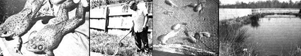

Older tadpoles go from incubator to holding pond... During their 4 to 5 monthsin the holding pool, the tads change to frogs. The male bullfrog (foreground) has larger eardrun ""circle"" that his mate... A fish net comes in handy for filling big orders